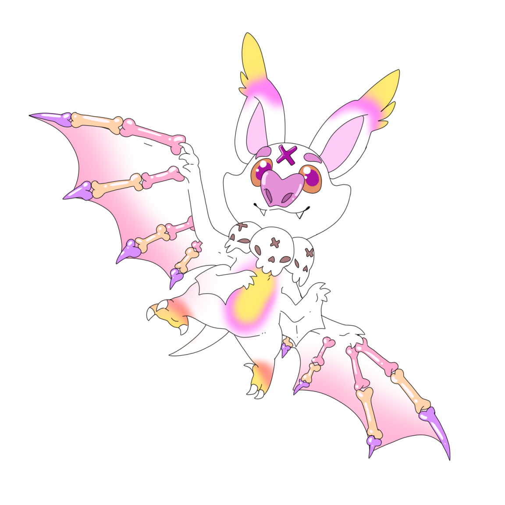
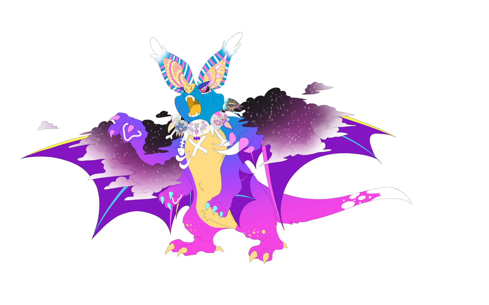
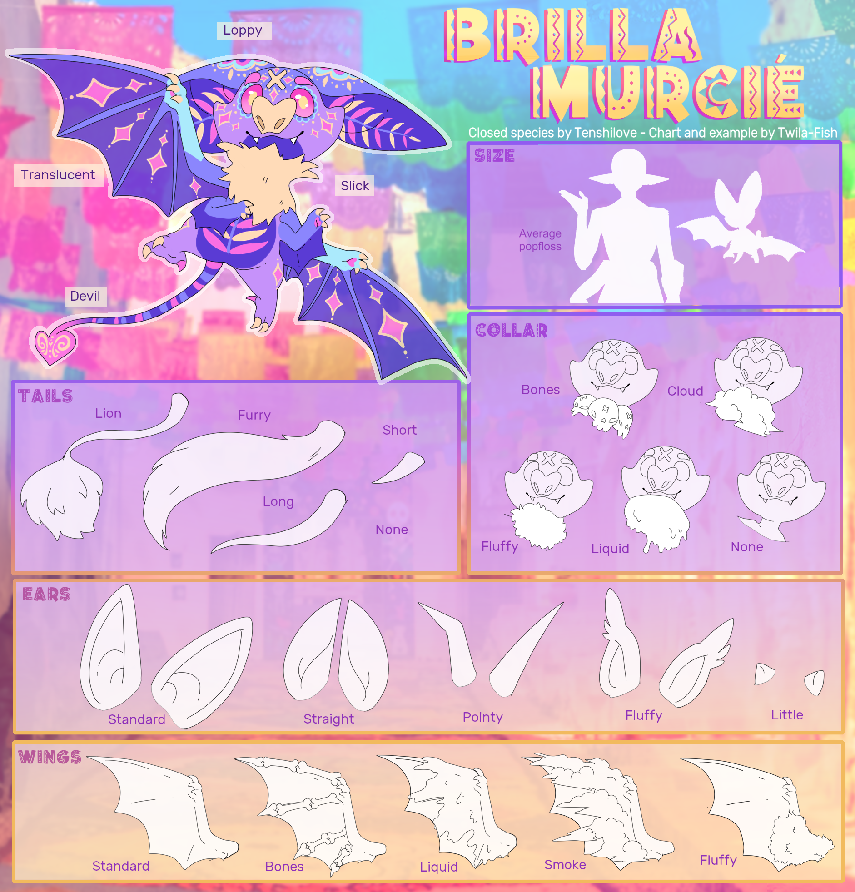
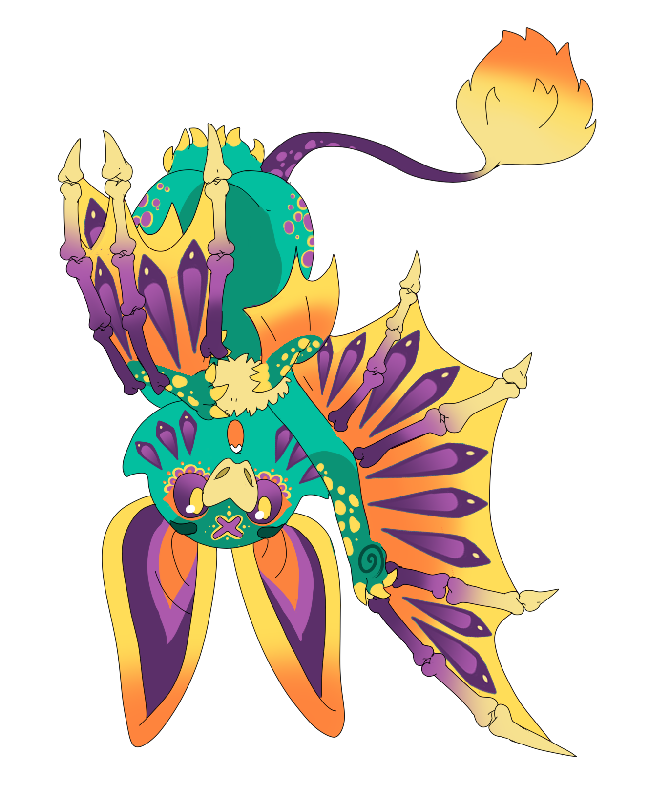
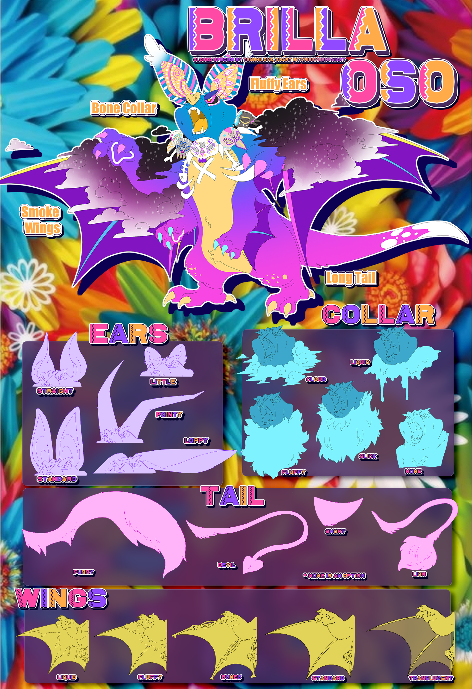
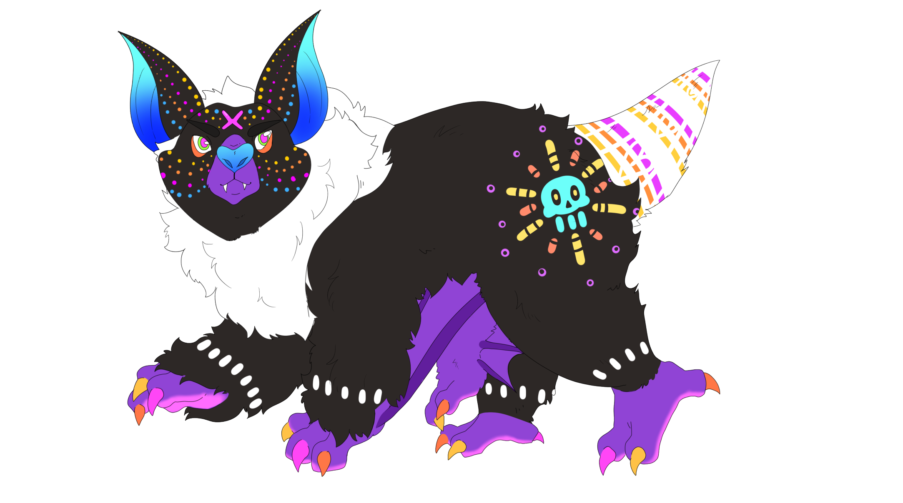
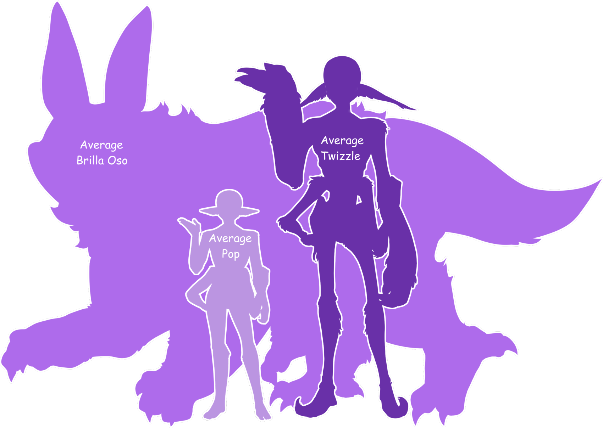

Omicron Clan Petpet Guide
Check out these awesome creatures who originate from the Omicron clan!

Brilla Murcie
Brilla OsoBrilla Murcie
2025 . 1st Wave . Pre-Evolved . Enhanced Vision
{kind=link}

Check out this Community Art of Floss and their Brilla Murcie! The Brilla Murcies Celebrate their Pet Day on May 18thYou can claim a free Brilla Murcie on that day in our discord server!
Deep within the vibrant Maltese Jungle of Omicron, a mesmerizing species takes to the
skies each night: the Brilla Murcié. These colorful, bat-like creatures, renowned for
their furry coats and friendly disposition, are an absolute delight to the Floss of
Omicron, who cherish them as beloved companions.

Known affectionately as "furry flyers," the Brilla Murcié are not just beautiful; they are also noted for their charming, friendly, and curious nature, making them cherished residents across the Clan of Omicron.When it's time to rest, Brilla Murcié exhibit a curious behavior, preferring to sleep upside down, suspended by the strong claws on their feet. For those who welcome a Brilla Murcié into their homes, specialized Brilla towers or perches hung from the ceiling are highly recommended. Providing these comfortable hanging spots prevents them from finding alternative, less desirable perches, such as your ceiling fans or delicate door frames.
Beyond their charming demeanor, the Brilla Murcié are adept predators, subsisting on small prey. They employ sharp fangs to inject venom into their targets, a capability strikingly similar to the Twizzlefloss. However, it's their unique interaction with Jawbreaker bats that truly sets the Brilla Murcié apart. Unlike the usual numbing effect, Brilla venom, when injected into a Jawbreaker bat, initiates a remarkable metamorphosis. This extraordinary process sees the Jawbreaker bat gradually transform into a Brilla Murcié! Described as relatively painless after the initial injection, this transformation mirrors the natural evolution processes observed in other petpets, offering a fascinating glimpse into Omicron's intricate biological wonders.
From their vibrant colors and friendly curiosity to their unparalleled infrared vision and the astounding ability to orchestrate metamorphosis, the Brilla Murcié stand as a testament to the incredible diversity of life in the Maltese Jungle. They are not just creatures of the night; they are vibrant, vital members of Omicron's ecosystem, continually captivating all who encounter them.
Brilla Oso
2026 . 1st Wave . Evolved . Enhanced Vision
{kind=link}

Check out this Community Art of Floss and their Brilla Osos! The Brilla Osos Celebrate their Pet Day on November 22ndYou can claim a free Brilla Oso on that day in our discord server!
The Brilla Oso is a massive, furry beast that lives in the deep jungles and caves of the
oOmicron clan. This giant creature stands at least fifteen feet tall and evolves from
the Brilla Murcie. While they can can be ferocious in the wild, they are actually
peaceful if raised by a floss from a young age. They form very close bonds with their
trainers and behave gently- if not stubborn and glutanous- around them.

These large creatures share the Omicron's special ability of advanced sight. Their extraordinary eyes allow them to see across incredible distances and look at the world in great detail. They can even see directly through solid objects like rock walls and thick trees. This powerful vision helps them hunt for food and live safely inside their dark cave homes.On their large bodies, the Brilla Oso have gigantic bat-like wings that can fold tightly against their sbodies. This physical feature works just like the wings of an Earth sugar glider or a flying squirrel. They rarely use these wings to fly high into the sky, but they use them to leap great distances into the jungle trees. They also glide down smoothly from high cave ceilings and float over dangerous gaps and gorges in the ground.

The Twizzles of Omicron have a long history of taming these creatures and riding them through the thick forest. By nature, these giant beasts are very slow, lazy, and love to rest for long periods. A typical Brilla Oso sleeps for days at a time if nobody wakes it up, and wild ones can sleep for an entire month without stopping. Because they move so slowly, they do not make fast mounts for travel. However, they are incredibly strong, so the Omicron use them to pull heavy carriages, move giant boulders, and knock down trees.The local floss love them so much! There is an old legend about a Brilla Oso that once bit an uptight twizzlefloss. The bite transformed the twizzlefloss into an Oso, who learned how to relax and take life slow. According to the story, he enjoyed this peaceful lifestyle so much that he chose to stay an Oso for the rest of his days.